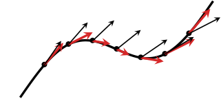
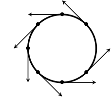
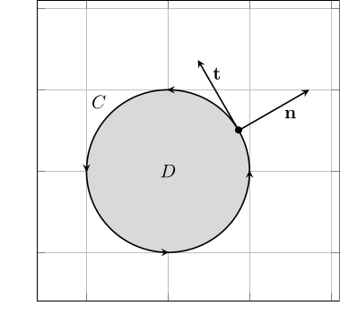
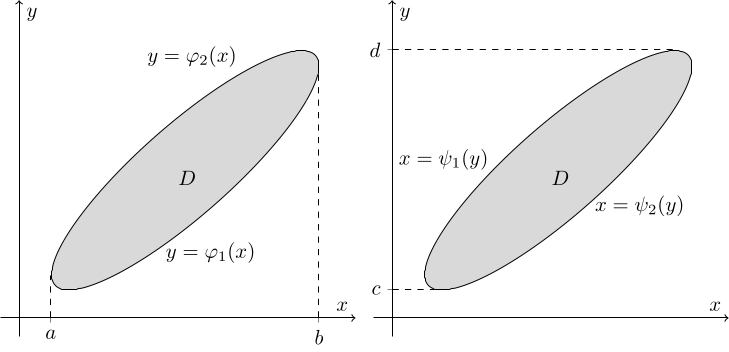

4. ベクトル解析への応用
ここまでの説明では スカラー値関数 (スカラー場) を被積分関数として考えてきたが, ここでは ベクトル値関数 (ベクトル場) に対する積分を扱う. 例えば物理や工学では, $3$ 次元空間 (もしくは簡略化して $2$ 次元平面) 内の物理量をベクトルとして表すことがある. 物体や流体の速度や加速度のように向きと大きさを持つ量はもちろん, 電場, 磁場, 重力場などのベクトル場も, 積分することでさまざまな現象の解析に利用される.
ここでは話の簡単のために, $2$ 次元平面 $\mathbb{R}^2$ 内のベクトル値関数に限定して, その積分について解説する. ただし, ここで説明する内容のほぼ全ては $3$ 次元空間内のベクトル値関数の積分でも通用するものである. 特に グリーンの定理 と 発散定理 を利用することで, 重積分に対する部分積分の公式を導出することができる. 一変数関数の積分のときと同様に部分積分は極めて重要なテクニックであり, さまざまな分野に応用されるものである.
4.1: ベクトル値関数の線積分
まずはベクトル値関数とは何か, およびいくつかの用語について確認しておく (簡単のために実ベクトル値関数のみを考える):
ベクトル値関数と対比して, 値が単一の数である関数を スカラー値関数 (scalar-valued function) と呼ぶことがある.
$C^1$ 級関数 $f(\mathbf{x}) = f(x_1, x_2, \dots, x_n)$ に対して, \[ \nabla f(\mathbf{x}) = \begin{pmatrix} \dfrac{\partial f}{\partial x_1}(\mathbf{x}) \cr \dfrac{\partial f}{\partial x_2}(\mathbf{x}) \cr \vdots \cr \dfrac{\partial f}{\partial x_n}(\mathbf{x}) \end{pmatrix}\in\mathbb{R}^n \] を関数 $f$ の 勾配 (gradient) と呼ぶのだった. この $\nabla f$ は, $\mathbf{x}\in\mathbb{R}^n$ を $\nabla f(\mathbf{x})\in\mathbb{R}^n$ に対応させるベクトル値関数である.
なお, 形式的に \[ \nabla = \begin{pmatrix} \dfrac{\partial}{\partial x_1} \cr \dfrac{\partial}{\partial x_2} \cr \vdots \cr \dfrac{\partial}{\partial x_n} \end{pmatrix} \] により (スカラー値) 関数 $f$ をベクトル値関数 $\nabla f$ に対応させているとみなすことができる. この $\nabla$ を ナブラ演算子 (del operator, nabla operator) と呼ぶことがある.
パラメータ $u$, $v$ を用いて $x(u, v)$ および $y(u, v)$ が表されているときに, ベクトル値関数 \[ \mathbf{x}(u, v) = \begin{pmatrix} x(u, v) \cr y(u, v) \end{pmatrix} \] に対し \[ J(u, v) = \begin{pmatrix} \dfrac{\partial x}{\partial u} & \dfrac{\partial x}{\partial v} \cr \dfrac{\partial y}{\partial u} & \dfrac{\partial y}{\partial v} \end{pmatrix} = \begin{pmatrix} x_u & x_v \cr y_u & y_v \end{pmatrix} \] をヤコビ行列と呼ぶのであった. ベクトル値関数 $\mathbf{f}(\mathbf{x})$ のヤコビ行列は \[ D\mathbf{f}(\mathbf{x}) = \begin{pmatrix} \dfrac{\partial f_1}{\partial x_1} & \dfrac{\partial f_1}{\partial x_2} &\dots & \dfrac{\partial f_1}{\partial x_n} \cr \dfrac{\partial f_2}{\partial x_1} & \dfrac{\partial f_2}{\partial x_2} &\dots & \dfrac{\partial f_2}{\partial x_n} \cr \vdots & \vdots & \ddots & \vdots \cr \dfrac{\partial f_m}{\partial x_1} & \dfrac{\partial f_m}{\partial x_2} &\dots & \dfrac{\partial f_m}{\partial x_n} \end{pmatrix} \in\mathbb{R}^{m\times n} \] と表記されることもある.
それではベクトル値関数の線積分について説明しよう. パラメータ $t$ を用いて \[ C = \{\mathbf{r}(t)\in\mathbb{R}^2: a\le t\le b\} \] と表される曲線 $C$ を考える. スカラー値関数 $f(\mathbf{x})$ の線積分は \[ \int_C f(\mathbf{x})~ds = \int_a^bf(\mathbf{r}(t))|\mathbf{r}'(t)|~dt \] であり, $ds$ は線素と呼ばれ, 曲線 $C$ の一部を表す微小長さと解釈されるのであった. 一方, ベクトル値関数 $\mathbf{f}(\mathbf{x})$ の線積分は \[ \int_C \mathbf{f}(\mathbf{x})\cdot d\mathbf{r} = \int_a^b \mathbf{f}(\mathbf{r}(t))\cdot \mathbf{r}'(t)~dt \] と定義される, ここで $d\mathbf{r}$ は 線素ベクトル と呼ばれ, 曲線 $C$ の一部を表す微小なベクトルであると解釈される. この積分は, 特に右辺に接ベクトル $\mathbf{r}'(t)$ との内積が現れているため, ベクトル $\mathbf{f}$ の接線方向の (符号付き) 成分の累積量と解釈できる. なお, ベクトル値関数の線積分により得られる積分値はスカラーである (ベクトルではない).
下にベクトル値関数の線積分のイメージ図を示す. 黒い曲線が曲線 $C$, 黒い矢印が曲線 $C$ 上のいくつかの点 $\mathbf{x}$ におけるベクトル値関数 $\mathbf{f}(\mathbf{x})$ の値を表し, 赤い矢印が曲線 $C$ の接線方向の成分を表すベクトルである. このとき, ベクトル値関数の線積分は, 赤い矢印の (符号付き) 成分の累積量と説明される.

さて, ベクトル値関数 \[ \mathbf{f}(x, y) = \begin{pmatrix} f_1(x, y) \cr f_2(x, y) \end{pmatrix} \] に対し, 曲線 $C$ のパラメータ表示に現れる \[ \mathbf{r}(t) = \begin{pmatrix} x(t) \cr y(t) \end{pmatrix} \] に対応する線素ベクトル $d\mathbf{r}$ を \[ d\mathbf{r} = \begin{pmatrix} dx \cr dy \end{pmatrix} \] と表すことで \[ \int_C \mathbf{f}(\mathbf{x})\cdot d\mathbf{r} = \int_C f_1~dx + f_2~dy \] と表記することがある. また, \[ dx = x'(t)~dt,\quad dy = y'(t)~dt \] として \[ \int_a^b f_1(\mathbf{r}(t))x'(t)~dt + \int_a^b f_2(\mathbf{r}(t))y'(t)~dt = \int_a^b \mathbf{f}(\mathbf{r}(t))\cdot\mathbf{r}'(t)~dt \] と書き直すことができ, 確かに上で定義として述べた式と一致する.
以上の説明を簡単にまとめておこう:
滑らかな曲線 $C = \{\mathbf{r}(t) : a\le t\le b\}$ 上で定義されたベクトル値関数 \[ \mathbf{f}(\mathbf{x}) = \begin{pmatrix} f_1(x, y) \cr f_2(x, y) \end{pmatrix} \] について, \[ \int_C f_1~dx + f_2~dy = \int_C \mathbf{f}(\mathbf{x})\cdot d\mathbf{r} = \int_a^b \mathbf{f}(\mathbf{r}(t))\cdot\mathbf{r}'(t)~dt \] を曲線 $C$ に沿った線積分という.
- ベクトル値関数の線積分は (向きを保つ限り) 曲線 $C$ のパラメータ表示に依存しない (これはスカラー値関数の線積分と同様である). 一方で, ベクトル値関数の線積分は (スカラー値関数の線積分とは異なり) 曲線の向きに依存する: 曲線 \[ C = \{\mathbf{r}(t) : a\le t\le b\} \] に対し, 向きを反転した曲線 $-C$ に沿ったベクトル値関数の線積分は \[ \int_{-C}\mathbf{f}(\mathbf{x})\cdot d\mathbf{r} = -\int_C\mathbf{f}(\mathbf{x})\cdot d\mathbf{r} \] となり, 積分区間の反転に相当する性質が成り立つ.
- スカラー値関数の線積分と同様に, 曲線 $C$ が $2$ つの曲線 $C_1$, $C_2$ に分割される場合は \[ \int_C \mathbf{f}(\mathbf{x})\cdot d\mathbf{r} = \int_{C_1} \mathbf{f}(\mathbf{x})\cdot d\mathbf{r} + \int_{C_2} \mathbf{f}(\mathbf{x})\cdot d\mathbf{r} \] が成立する. また曲線 $C$ が閉曲線である場合には線積分を \[ \oint_C \mathbf{f}(\mathbf{x})\cdot d\mathbf{r} \] と表記し, 閉路積分もしくは周回積分と呼ぶことがある.
曲線 $C$ は原点を中心とした半径 $R$ の円周を反時計回りに $1$ 周進むとする. このとき, 曲線 $C$ に沿ったベクトル値関数 \[ \mathbf{f}(\mathbf{x}) = \begin{pmatrix} -y \cr x \end{pmatrix} \] の線積分を計算してみよう. 曲線 $C$ の向きに注意して \[ C = \{\mathbf{r}(\theta)\in\mathbb{R}^2: 0\le \theta\le 2\pi\},\quad \mathbf{r}(\theta) = \begin{pmatrix} R\cos\theta \cr R\sin\theta \end{pmatrix} \] というパラメータ表示を用いると, \[ \oint_C \mathbf{f}(\mathbf{x})\cdot d\mathbf{r} = \int_0^{2\pi} \begin{pmatrix} -R\sin\theta \cr R\cos\theta \end{pmatrix}\cdot\begin{pmatrix} -R\sin\theta \cr R\cos\theta \end{pmatrix}~d\theta = 2\pi R^2 \] と計算できる. なお, この例ではベクトル $\mathbf{f}(\mathbf{x})$ は曲線 $C$ に接するため, 上の計算のように \[ \mathbf{f}(\mathbf{r}(\theta))\cdot \mathbf{r}'(\theta) = |\mathbf{f}(\mathbf{x}(\theta))|^2 = R^2 \] となっている.

曲線 $C: y=x^2$ ($0\le x\le 1$) に沿ったベクトル値関数 \[ \mathbf{f}(\mathbf{x}) = \begin{pmatrix} x^2 \cr y^2 \end{pmatrix} \] の線積分を計算してみよう. 曲線 $C$ の向きが明示されていないが, 上のように曲線が与えられた場合は $x$ が小さい方から大きい方へ向かうとみなす: \[ \int_C\mathbf{f}(\mathbf{x})\cdot d\mathbf{r} = \int_0^1 \begin{pmatrix} x^2 \cr x^4 \end{pmatrix} \cdot\begin{pmatrix} 1 \cr 2x \end{pmatrix}~dx = \dfrac{2}{3}. \]
曲線 $C$ が \[ \left\{\begin{array}{rl} x &= R\cos\theta, \cr y &= R\sin\theta \end{array}\right.\quad (0\le \theta\le \pi/2) \] により与えられているとする. このとき, 曲線 $C$ に沿ったベクトル値関数 \[ \mathbf{f}(\mathbf{x}) = \begin{pmatrix} y^2 \cr x^2 \end{pmatrix} \] の線積分を求めよ.
曲線 $C$ がこのように与えられた場合は $\theta$ が小さい方から大きい方へ向かうとみなす. あとは定義に基づき $\theta$ に関する積分に書き直し, 普通に計算すれば良い: \[ \begin{array}{rl} \displaystyle\int_C \mathbf{f}(\mathbf{x})\cdot d\mathbf{r} &= \displaystyle\int_0^{\pi/2} \begin{pmatrix} R^2\sin^2\theta \cr R^2\cos^2\theta \end{pmatrix} \cdot\begin{pmatrix} -R\sin\theta \cr R\cos\theta \end{pmatrix} ~d\theta \cr &= R^3\displaystyle\int_0^{\pi/2}\cos^3\theta-\sin^3\theta~d\theta \cr &= R^3\displaystyle\int_0^{\pi/2}\dfrac{3\cos\theta + \cos3\theta}{4} - \dfrac{3\sin\theta - \sin3\theta}{4}~d\theta \cr &= R^3 \left(\dfrac{3}{4} - \dfrac{1}{12} - \dfrac{3}{4} + \dfrac{1}{12}\right) \cr &= 0. \end{array} \]
ベクトル値関数の線積分を用いて表される性質をいくつか述べておこう. まず, 曲線 \[ C = \{\mathbf{r}(t)\in\mathbb{R}^2: a\le t\le b\} \] に対し, $\mathbf{r}'(t)$ を接ベクトルと呼んでいたが, さらに \[ \mathbf{t}(\mathbf{r}(t)) = \dfrac{\mathbf{r}'(t)}{|\mathbf{r}'(t)|} \] を 単位接ベクトル (unit tangent vector) という (この "単位" という名前は大きさが $1$ のベクトルであることを意味する). さらに, $\mathbf{n}(t) = -\mathbf{t}^{\perp}$, つまり \[ \mathbf{t} = \begin{pmatrix} t_1 \cr t_2 \end{pmatrix} \quad\text{に対し}\quad \mathbf{n} = \begin{pmatrix} t_2 \cr -t_1 \end{pmatrix} \] を 単位法線ベクトル (unit normal vector) という. これらを用いると, ベクトル値関数の線積分に関連して, 以下の等式が成立する:
曲線 $C = \{\mathbf{r}(t)\in\mathbb{R}^2 : a\le t\le b\}$ 上のベクトル値関数 \[ \mathbf{f}(\mathbf{x}) = \begin{pmatrix} f_1(x, y) \cr f_2(x, y) \end{pmatrix} \] に対して, \[ \int_C \mathbf{f}(\mathbf{x})\cdot \mathbf{n}~ds = \int_C \begin{pmatrix} -f_2(\mathbf{x}) \cr f_1(\mathbf{x}) \end{pmatrix}\cdot \mathbf{t} ~ ds = \int_C \begin{pmatrix} -f_2(\mathbf{x}) \cr f_1(\mathbf{x}) \end{pmatrix}\cdot d\mathbf{r} \] が成立する.
まず, \[ \mathbf{t} = \begin{pmatrix} t_1 \cr t_2 \end{pmatrix},\quad \mathbf{n} = \begin{pmatrix} t_2 \cr -t_1 \end{pmatrix} \] とおくと, ベクトルの内積を計算することで \[ \mathbf{f}(\mathbf{x})\cdot \mathbf{n} = f_1t_2 - f_2t_1 = \begin{pmatrix} -f_2(\mathbf{x}) \cr f_1(\mathbf{x}) \end{pmatrix}\cdot \mathbf{t} \] を確かめることができるため左側の等号成立は良い. あとは, 任意のベクトル値関数 $\widetilde{\mathbf{f}}(\mathbf{x})$ に対し \[ \begin{array}{rl} \displaystyle\int_C \widetilde{\mathbf{f}}(\mathbf{x})\cdot d\mathbf{r} &= \displaystyle\int_a^b \widetilde{\mathbf{f}}(\mathbf{r}(t))\cdot \mathbf{r}'(t) ~dt \cr &= \displaystyle\int_a^b \widetilde{\mathbf{f}}(\mathbf{r}(t))\cdot \mathbf{t}(\mathbf{r}(t))~ |\mathbf{r}'(t)|~dt \cr &= \displaystyle\int_C \widetilde{\mathbf{f}}(\mathbf{x})\cdot \mathbf{t}(\mathbf{x}) ~ ds \end{array} \] が成立することから, 右側の等号が成立することも示される.
さて, 以降は閉曲線 $C$ 内部の領域 $D$ を考えることがあるが, そのような場合には閉曲線 $C$ の向きとして, 領域 $D$ の内部が左側にある向きを正とすることにする (逆向きの曲線を考える場合は $-C$ と表記することにする). 例えば, 領域 $D$ に穴が空いていないならば, その境界 $C$ は常に反時計回りに向きづけられていると考えることになる. なお, このように境界 $C$ の向きを定めた場合, 曲線 $C$ の単位法線ベクトル $\mathbf{n}$ は領域 $D$ の外側を向いていることになるため, 特に 外向き単位法線ベクトル (outer unit normal vector) と呼ばれることがある.

次に述べる グリーンの定理 は, 領域境界上でのベクトル値関数の線積分と領域内部での重積分との対応関係を与えるものである. 証明については簡単な場合に限り述べることにする:
$xy$ 平面内の反時計回りの区分的滑らかな単純閉曲線 $C$ と $C$ で囲まれる領域 $D$, および $D$ とその境界 $C$ を含む領域上で $C^1$ 級のベクトル値関数 \[ \mathbf{f}(\mathbf{x}) = \begin{pmatrix} f_1(x, y) \cr f_2(x, y) \end{pmatrix} \] に対して, \[ \oint_{C}\mathbf{f}(\mathbf{x})\cdot d\mathbf{r} = \iint_{D}\left(\dfrac{\partial f_2}{\partial x} - \dfrac{\partial f_1}{\partial y}\right)~dxdy \] が成立する.
- 左辺を書き換えることで, \[ \oint_C f_1~dx + f_2~dy = \iint_{D}\left(\dfrac{\partial f_2}{\partial x} - \dfrac{\partial f_1}{\partial y}\right)~dxdy \] と表現されることもある.
- 右辺の被積分関数は, 形式的には \[ \det(\nabla, \mathbf{f}) = \det\begin{pmatrix} \dfrac{\partial}{\partial x} & f_1 \cr \dfrac{\partial}{\partial y} & f_2 \end{pmatrix} \] であると思うことができるものであり, これを $\operatorname{rot}\mathbf{f}$ と表記することがある.
- 実際には領域 $D$ に穴が空いているような場合にも成立するが, ここでは簡単のために考えないことにする.
ここでは領域 $D$ が,
- $a\le x\le b$ 上の $2$ つの関数 $y=\varphi_1(x)$, $y=\varphi_2(x)$ で囲まれ, かつ
- $c\le y\le d$ 上の $2$ つの関数 $x=\psi_1(y)$, $x=\psi_2(y)$ で囲まれる
という状況に限り証明を述べることにする (下図).

まず, 右辺の二重積分を逐次積分により書き換えることで \[ \begin{array}{rl} \displaystyle\iint_D\left(\dfrac{\partial f_2}{\partial x} - \dfrac{\partial f_1}{\partial y}\right)~dxdy &= \displaystyle\int_c^d\int_{\psi_1(y)}^{\psi_2(y)} \dfrac{\partial f_2}{\partial x}~dxdy - \int_a^b\int_{\varphi_1(x)}^{\varphi_2(x)} \dfrac{\partial f_1}{\partial y}~dydx \cr &= \displaystyle\int_c^d \left(f_2(\psi_2(y), y) - f_2(\psi_1(y), y)\right)~dy \cr &\qquad - \displaystyle\int_a^b \left(f_1(x, \varphi_2(x)) - f_1(x, \varphi_1(x))\right)~dx \quad(\because\ \text{微積分学の基本定理}) \end{array} \] が得られる. 一方で, 左辺の線積分は \[ \oint_C\mathbf{f}(\mathbf{x})\cdot d\mathbf{r} = \underbrace{\oint_C f_1(x, y(x))~dx}_{=I_1} + \underbrace{\oint_C f_2(x(y), y)~dy}_{=I_2} \] であるが, $I_1$ を計算する際は曲線 $C$ を $\varphi_1$, $\varphi_2$ それぞれに対応する $C_1$, $C_2$ の二つに (向きに注意して) 分割することで, \[ \begin{array}{rl} I_1 &= \displaystyle\int_{C_1} f_1(x, y(x))~dx + \int_{C_2} f_1(x, y(x))~dx \cr &= \displaystyle\int_a^b f_1(t, \varphi_1(t))~dt - \int_a^b f_1(t, \varphi_2(t)) ~dt \end{array} \] となる ($C_2$ の向きより第 $2$ 項はマイナスになることに注意). また, $I_2$ を計算する際は曲線 $C$ を $\psi_1$, $\psi_2$ それぞれに対応する $C_3$, $C_4$ の二つに分割することで, 同様に \[ \begin{array}{rl} I_2 &= \displaystyle\int_{C_3} f_2(x(y), y)~dy + \int_{C_4} f_2(x(y), y)~dy \cr &= \displaystyle\int_c^d f_2(\psi_2(t), t)~dt - \int_c^d f_2(\psi_1(t), t) ~dt \end{array} \] となる. 以上より, \[ \begin{array}{rl} \text{(左辺)} &= I_1 + I_2 \cr &= \displaystyle\int_c^d \left(f_2(\psi_2(y), y) - f_2(\psi_1(y), y)\right)~dy \cr &\qquad - \displaystyle\int_a^b \left(f_1(x, \varphi_2(x)) - f_1(x, \varphi_1(x))\right)~dx \cr &= \text{(右辺)} \end{array} \] が得られる.
グリーンの定理には様々な応用が存在するが, そのうちの一つが領域の面積の計算を線積分, さらに置換積分により $1$ 変数関数の積分の計算に置き換えることである. パラメータ表示が与えられた曲線 $C = \{\mathbf{r}(t) : a\le t\le b\}$ 内部の領域 $D$ の面積は, グリーンの公式により例えば \[ \begin{array}{rl} |D| &= \displaystyle\iint_D ~dxdy \cr &= \dfrac{1}{2}\displaystyle\oint_C -y~dx + x~dy \quad (\because f_2=x/2,\ f_1=-y/2\ \text{としてグリーンの公式}) \cr &= \dfrac{1}{2}\displaystyle\int_a^b \left(-y(t)\dfrac{dx}{dt} + x(t)\dfrac{dy}{dt}\right)~dt \quad(\because \ \text{置換積分}) \end{array} \] のように計算することが可能である.
$R\gt0$ とする. また曲線 $C$ が \[ \left\{\begin{array}{rl} x &= R\cos^3\theta, \cr y &= R\sin^3\theta \end{array}\right.\quad (0\le \theta\le 2\pi) \] により与えられているとする. このとき, 曲線 $C$ 内部の領域 $D$ の面積 $|D|$ を求めよ.
グリーンの公式を利用するならば, 例えば \[ \begin{array}{rl} |D| &= \displaystyle\iint_D ~dxdy \cr &= \dfrac{1}{2}\displaystyle\oint_C -y~dx + x~dy \cr &= \dfrac{1}{2}\displaystyle\int_0^{2\pi} \left(-y(\theta)\dfrac{dx}{d\theta} + x(\theta)\dfrac{dy}{d\theta}\right)~d\theta \cr &= \dfrac{3}{2}R^2\displaystyle\int_0^{2\pi} \cos^2\theta\sin^4\theta + \cos^4\theta\sin^2\theta ~d\theta\cr &= \dfrac{3}{8}R^2\displaystyle\int_0^{2\pi} \sin^2 2\theta~d\theta \cr &= \dfrac{3}{8}R^2\displaystyle\int_0^{2\pi} \dfrac{1}{2}(1-\cos4\theta)~d\theta \cr &= \dfrac{3}{8}\pi R^2. \end{array} \] もしもグリーンの公式を利用しないならば, 例えば \[ \begin{array}{rl} |D| &= 4\displaystyle\int_0^R y~dx \cr &= 4\displaystyle\int_{\pi/2}^0 R\sin^3\theta (-3R\cos^2\theta\sin\theta)~d\theta \cr &= 12R^2\displaystyle\int_0^{\pi/2} \cos^2\theta\sin^4\theta~d\theta \cr &= 12R^2 \dfrac{1}{2}B(5/2, 3/2) \cr &= 6R^2\dfrac{\Gamma(5/2)\Gamma(3/2)}{\Gamma(4)} \cr &= 6R^2\dfrac{3/2\cdot1/2\sqrt{\pi}\cdot 1/2\sqrt{\pi}}{3!} \cr &= 6R^2\dfrac{\pi}{16} \cr &= \dfrac{3}{8}\pi R^2 \end{array} \] のように計算することも可能である.
4.2: 発散定理と部分積分
グリーンの公式は, 領域内部での二重積分と領域境界上での線積分とを対応させる定理であった. ここでは, 同様に二重積分と線積分を用いて記述される公式について紹介していこう. 特に二重積分 (より一般に重積分) に対する 部分積分 の公式は, 様々な分野で重要となるものである.
まずは 4.1 において紹介した補題 とグリーンの公式を用いることで, 発散定理 (ガウスの発散定理) を証明することができる (ついでに 発散 とは何だったか簡単に振り返っておく):
$D\subset\mathbb{R}^n$ 上の $C^1$ 級ベクトル値関数 \[ \mathbf{f}(\mathbf{x}) = \begin{pmatrix} f_1(x_1, x_2, \dots, x_n) \cr f_2(x_1, x_2, \dots, x_n) \cr \vdots \cr f_n(x_1, x_2, \dots, x_n) \end{pmatrix} \in\mathbb{R}^n \] に対して, \[ \operatorname{div}\mathbf{f} = \dfrac{\partial f_1}{\partial x_1}(\mathbf{x}) + \dfrac{\partial f_2}{\partial x_2}(\mathbf{x}) + \dots + \dfrac{\partial f_n}{\partial x_n}(\mathbf{x}) \] を $\mathbf{f}$ の $\mathbf{x}$ における 発散 (divergence) という.
発散はナブラ作用素 $\nabla$ を用いて, 形式的に \[ \operatorname{div}\mathbf{f} = \nabla\cdot\mathbf{f} \] のように表記されることもある.
$xy$ 平面内の反時計回りの区分的滑らかな単純閉曲線 $C$ と $C$ で囲まれる領域 $D$, および $D$ とその境界 $C$ を含む領域上で $C^1$ 級のベクトル値関数 $\mathbf{f}(\mathbf{x})$ に対して, \[ \iint_D \nabla\cdot\mathbf{f}~dxdy = \oint_{C}\mathbf{f}\cdot \mathbf{n}~ds \] が成立する, ただし $\mathbf{n}$ は境界 $C$ の外向き単位法線ベクトルである.
ベクトル値関数 \[ \mathbf{f}(\mathbf{x}) = \begin{pmatrix} f_1(x, y) \cr f_2(x, y) \end{pmatrix} \] に対して, \[ \begin{array}{rl} \displaystyle\oint_C \mathbf{f}\cdot\mathbf{n}~ds &= \displaystyle\int_C \begin{pmatrix} -f_2(\mathbf{x}) \cr f_1(\mathbf{x}) \end{pmatrix}\cdot d\mathbf{r} \quad (\because \ \text{4.1 の補題}) \cr &= \displaystyle\iint_D\left(\dfrac{\partial f_1}{\partial x} - \dfrac{\partial (-f_2)}{\partial y}\right)~dxdy \quad (\because\ \text{グリーンの定理}) \cr &= \displaystyle\iint_D\nabla\cdot\mathbf{f} ~dxdy \end{array} \] と計算して定理の結果が得られる.
直観的には, 発散 $\nabla\cdot \mathbf{f}(\mathbf{x})$ は点 $\mathbf{x}$ における湧出量を表すと説明される. また, $\mathbf{f}\cdot\mathbf{n}$ は境界を直交する向きに横切る成分であると説明される. 従って, 発散定理は \[ \underbrace{\iint_D \nabla\cdot\mathbf{f}~dxdy}_{=\text{湧出量の総和}} = \underbrace{\oint_{C}\mathbf{f}\cdot \mathbf{n}~ds}_{=\text{流出量の総和}}, \] つまり領域 $D$ 内部での総湧出量と境界を通過する総流出量が等しい, ということを表している.
さらに直観的な説明をすると, 発散定理 \[ \iint_D \nabla\cdot\mathbf{f}~dxdy = \oint_{C}\mathbf{f}\cdot \mathbf{n}~ds \] は微積分学の基本定理 \[ \int_a^b f'(x) ~dx = \left[f(x)\right]_a^b \] に相当するものであると解釈できる. つまり微積分学の基本定理と同様の式変形を二重積分に対して行う際には, 関数の微分 $f'(x)$ が発散 $\nabla\cdot\mathbf{f}$ に, 関数の区間端点での値の計算が領域境界上での外向き単位法線ベクトル $\mathbf{n}$ を用いた線積分に変化する, と解釈することができる. 発散定理で外向き単位法線ベクトル $\mathbf{n}$ が現れることに違和感を感じるかもしれないが, 実際には $1$ 変数の積分でも \[ \left[f(x)\right]_a^b = f(b) - f(a) = (-1)\cdot f(a) + 1\cdot f(b) \] であることに注意すると, 一次元区間 $[a, b]$ の左端点における "外向き単位法線ベクトル" が $-1$, 右端点での "外向き単位法線ベクトル" が $1$ と思うことできちんと対応している.
曲線 $C$ が \[ \left\{\begin{array}{rl} x &= R\cos\theta, \cr y &= R\sin\theta \end{array}\right.\quad (0\le \theta\le 2\pi) \] により与えられているとき, ベクトル値関数 \[ \mathbf{f}(\mathbf{x}) = \begin{pmatrix} x+2y^2 \cr 3x^2+4y \end{pmatrix} \] に対し, 線積分 \[ \oint_C\mathbf{f}\cdot\mathbf{n}~ds \] を計算してみよう. 発散定理を用いると, 曲線 $C$ の内部 $D$ が半径 $R$ の円盤領域であることから, \[ \begin{array}{rl} \displaystyle\oint_C\mathbf{f}\cdot\mathbf{n}~ds &= \displaystyle\iint_D \nabla\cdot\mathbf{f}~dxdy \cr &= \displaystyle\iint_D 5~dxdy \cr &= 5|D| = 5\pi R^2 \end{array} \] のように計算できる. 特に, $2y^2$ と $3x^2$ の部分が $\nabla\cdot\mathbf{f}$ を計算することで消えてくれるため, 積分の計算が簡単になる.
もしも発散定理を使わないならば, 曲線 $C$ のパラメータ表示 \[ \mathbf{r}(\theta) = \begin{pmatrix} R\cos\theta \cr R\sin\theta \end{pmatrix} \] より \[ |\mathbf{r}'| = R,\quad \mathbf{n} = \begin{pmatrix} \cos\theta \cr \sin\theta \end{pmatrix} \] であることを用いることで \[ \begin{array}{rl} \displaystyle\oint_C \mathbf{f}\cdot\mathbf{n}~ds &= \displaystyle\int_0^{2\pi} \begin{pmatrix} R\cos\theta+2(R\sin\theta)^2 \cr 3(R\cos\theta)^2+4R\sin\theta \end{pmatrix} \cdot\begin{pmatrix} \cos\theta \cr \sin\theta \end{pmatrix}R~d\theta \cr &= R^2\displaystyle\int_0^{2\pi}\cos^2\theta + 2R\sin^2\theta\cos\theta + 3R\sin\theta\cos^2\theta + 4\sin^2\theta~d\theta \cr &= R^2\displaystyle\int_0^{2\pi} 1 + \dfrac{3}{2}(1-\cos2\theta) + 2R\left(\cos\theta - \dfrac{1}{4}(3\cos\theta+\cos3\theta)\right) + 3R\left(\sin\theta-\dfrac{1}{4}(3\sin\theta-\sin3\theta)\right) ~d\theta \cr &= 5\pi R^2 \end{array} \] のように計算することも可能である.
$R\gt0$ とする. また, 曲線 $C$ が \[ \left\{\begin{array}{rl} x &= R\cos\theta, \cr y &= R\sin\theta \end{array}\right.\quad (0\le \theta\le 2\pi) \] により与えられているとする. このとき, 関数 $f(x, y) = x^2y^2$ に対し, 線積分 \[ \oint_C \dfrac{\partial f}{\partial\mathbf{n}}~ds \] を求めよ, ただし \[ \dfrac{\partial f}{\partial\mathbf{n}} = (\nabla f)\cdot\mathbf{n} \] は外向き単位法線ベクトル方向の方向微分であり, 法線微分 (normal derivative) と呼ばれるものである.
閉曲線 $C$ 内部の領域を $D$ をおくと, \[ \begin{array}{rl} \displaystyle\oint_C\dfrac{\partial f}{\partial\mathbf{n}}~ds &= \displaystyle\iint_D \nabla\cdot(\nabla f)~dxdy \quad(\because\ \text{発散定理}) \cr &= \displaystyle\iint_D 2(x^2+y^2)~dxdy \cr &= \displaystyle\int_{[0, R]\times [0, 2\pi]} 2((r\cos\theta)^2+(r\sin\theta)^2)r~drd\theta \cr &= 4\pi\displaystyle\int_0^R r^3~dr \cr &= \pi R^4 \end{array} \] のように計算できる. 発散定理を使わず, \[ \begin{array}{rl} \displaystyle\oint_C\dfrac{\partial f}{\partial\mathbf{n}}~ds &= \displaystyle\int_0^{2\pi} \begin{pmatrix} 2R\cos\theta(R\sin\theta)^2 \cr 2(R\cos\theta)^2R\sin\theta \end{pmatrix}\cdot\begin{pmatrix} \cos\theta \cr \sin\theta \end{pmatrix}R~d\theta \cr &= \displaystyle\int_0^{2\pi}4R^4\sin^2\theta\cos^2\theta~d\theta \cr &= R^4\displaystyle\int_0^{2\pi}\dfrac{1}{2}(1-\cos4\theta)~d\theta \cr &= \pi R^4 \end{array} \] のように計算することも可能である.
さて, $1$ 変数関数の積分では, 微積分学の基本定理から部分積分の公式を導出することができていたが, 二重積分でも同様に発散定理から部分積分の公式 (グリーンの公式 と呼ばれることもある) を導出することができる:
$xy$ 平面内の反時計回りの閉曲線 $C$ と $C$ で囲まれる領域 $D$, および $D$ とその境界 $C$ を含む領域上で $C^1$ 級のベクトル値関数 $\mathbf{f}(\mathbf{x})$ とスカラー値関数 $g(\mathbf{x})$ に対して, \[ \iint_D \mathbf{f}\cdot (\nabla g)~dxdy = \oint_{C} (\mathbf{f}\cdot \mathbf{n})g~ds - \iint_D (\nabla\cdot\mathbf{f})g~dxdy \] が成立する.
$1$ 変数関数の積分における部分積分 \[ \int_a^b f(x)g'(x)~dx = \left[f(x)g(x)\right]_a^b - \int_a^b f'(x)g(x)~dx \] と比較すると, スカラー値関数 $g(x)$ の微分として勾配 $\nabla g$ を, ベクトル値関数 $\mathbf{f}$ の微分として発散 $\nabla\cdot\mathbf{f}$ を用いていると解釈することで対応関係が見て取れる.
$2$ つの関数 \[ \mathbf{f}(\mathbf{x}) = \begin{pmatrix} f_1(x, y) \cr f_2(x, y) \end{pmatrix}, \quad g(\mathbf{x}) = g(x, y) \] に対して \[ \begin{array}{rl} \nabla\cdot(\mathbf{f}g) &= \nabla\cdot\begin{pmatrix} f_1g \cr f_2g \end{pmatrix} \cr &= \dfrac{\partial (f_1g)}{\partial x} + \dfrac{\partial (f_2g)}{\partial y} \cr &= \left(\dfrac{\partial f_1}{\partial x}+\dfrac{\partial f_2}{\partial y}\right)g + f_1\dfrac{\partial g}{\partial x} + f_2\dfrac{\partial g}{\partial y} \cr &= (\nabla\cdot\mathbf{f})g + \mathbf{f}\cdot(\nabla g) \end{array} \] であることに注意すると, 発散定理より \[ \begin{array}{rl} \displaystyle\oint_C (\mathbf{f}\cdot\mathbf{n})g~ds &= \displaystyle\oint_C (\mathbf{f}g)\cdot\mathbf{n}~ds \cr &= \displaystyle\iint_D \nabla\cdot(\mathbf{f}g)~dxdy \cr &= \displaystyle\iint_D \left((\nabla\cdot\mathbf{f})g + \mathbf{f}\cdot(\nabla g)\right)~dxdy. \end{array} \]
ここでは \[ \Delta u = \nabla\cdot (\nabla u) \] により定められる ラプラシアン $\Delta$ を用いて, 領域 $D$ 上で与えられた関数 $f$ に対し \[ \left\{\begin{array}{rll} -\Delta u(\mathbf{x}) &= f(\mathbf{x}) & (\mathbf{x}\in D), \cr u(\mathbf{x}) &= 0 & (\mathbf{x}\in C) \end{array}\right. \] を満たす $u$ を求めよ, という問題を考えてみる, ただし $C$ は領域 $D$ の境界とする. なお, これは ポアソン方程式 と呼ばれるものであり, 電磁気学や流体力学など物理分野で頻繁に現れるものである. この式の両辺に, やはり境界 $C$ 上で $0$ となる適切な関数 $v$ を掛けて積分すると, \[ \begin{array}{rl} \displaystyle\iint_D fv~dxdy &= \displaystyle\iint_D -\nabla\cdot(\nabla u)v~dxdy \cr &= -\displaystyle\oint_C \dfrac{\partial u}{\partial\mathbf{n}} \underbrace{v}_{=0}~ds + \iint_D(\nabla u)\cdot(\nabla v)~dxdy \cr &= \displaystyle\iint_D(\nabla u)\cdot(\nabla v)~dxdy \end{array} \] という式を得ることができる.
つまり, 元々の問題 \[ -\Delta u(\mathbf{x}) = f(\mathbf{x}) \] では, $u$ に対する $2$ 階微分に相当する $\Delta u$ が現れているが, これに対応する問題として, 適切な条件を満たす 全ての 関数 $v$ (これを テスト関数 と呼ぶことがある) に対し \[ \iint_D (\nabla u)\cdot(\nabla v)~dxdy = \iint_D fv~dxdy \] を満たす $u$ を求める, という $u$ の $1$ 階微分しか現れない問題を考えることができる. このような式は 弱形式 と呼ばれ, 部分積分を利用することで問題に現れる微分の階数を減らすことができる, 重要なテクニックである.
$xy$ 平面内の反時計回りの閉曲線 $C$ に対し, $C$ で囲まれる領域を $D$ する. また, $C\cup D$ 上で定義される十分滑らかな関数 $u$ が \[ u(\mathbf{x}) = 0 \quad\text{もしくは}\quad\dfrac{\partial u}{\partial\mathbf{n}}(\mathbf{x})=0\qquad (\mathbf{x}\in C) \] を満たすとする. このとき, \[ \iint_D(\Delta u)u~dxdy \le 0 \] を証明せよ.
部分積分を用いると \[ \iint_D(\Delta u)u~dxdy = \oint_C\dfrac{\partial u}{\partial\mathbf{n}}u~ds - \iint_D|\nabla u|^2~dxdy \] が得られる. ここで, 領域の境界 $C$ 上での $u$ の条件より \[ \oint_C\dfrac{\partial u}{\partial\mathbf{n}}u~ds = 0 \] である. また, $|\nabla u|^2\ge0$ であることから, 重積分の単調性より \[ \iint_D |\nabla u|^2~dxdy \ge 0 \] が成立することに注意すると, \[ \iint_D(\Delta u)u~dxdy = - \iint_D|\nabla u|^2~dxdy \le 0 \] が得られる.